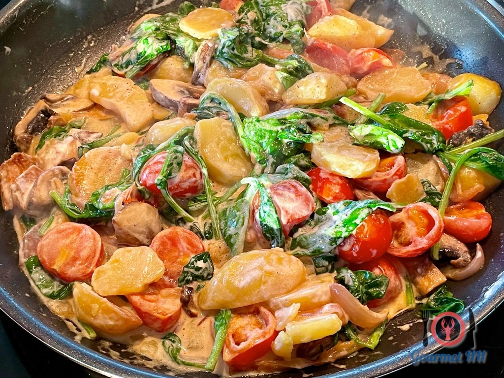

Florentiner Kartoffeln
Zubereitung
Vorbereitung
Die Kartoffeln werden ca. 20min vorgegart.
Ablauf
Zuerst werden vorgegarte Kartoffeln mit Schale längs in dickere Scheiben geschnitten. Dann bereitet man das Gemüse und die Kräuter vor: Spinat wird verlesen, gewaschen und grob geschnitten, Tomaten halbiert, Frühlingszwiebeln in feine Ringe, Petersilie gezupft sowie Zwiebel und Knoblauch fein gewürfelt. Der Feta wird trocken getupft und in kleine Würfel geschnitten. Anschließend brät man die Kartoffelscheiben in Öl goldbraun an und gibt gegen Ende Zwiebel und Knoblauch mit in die Pfanne. Danach kommen Tomaten, Spinat, Feta und ein Teil der Frühlingszwiebeln hinzu und alles wird kurz mitgebraten. Mit Anisée und Sahne wird abgelöscht, leicht eingekocht, Parmesan eingerührt und mit Salz und Pfeffer abgeschmeckt – zum Schluss wird das Gericht mit Petersilie und Frühlingszwiebeln garniert serviert.